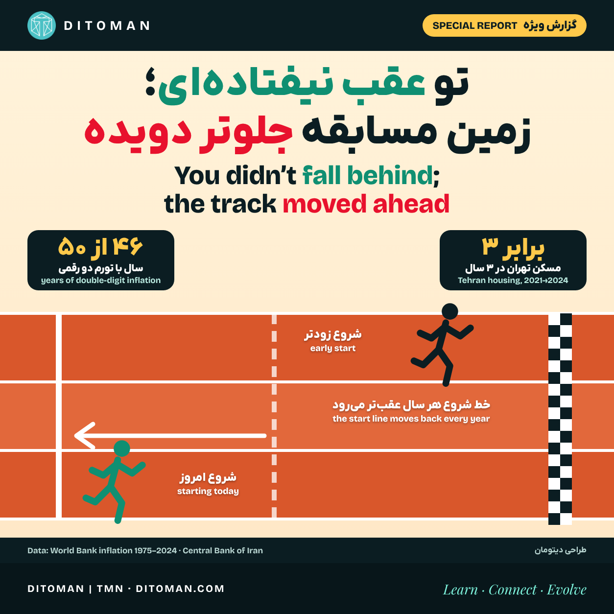

تو عقب نیفتادهای؛ زمین مسابقه جلوتر دویده
You did not fall behind; the track moved ahead
Why arriving late costs more in an inflationary economy, why it is not your fault, and what is still in our hands.
چرا در اقتصاد تورمی دیر رسیدن گران است، چرا تقصیر تو نیست و چه چیزی هنوز در اختیار ماست.
تورم ایران در ۴۶ سال از ۵۰ سال گذشته دو رقمی بوده است. چیزی که ۵۰ سال پیش ۱ تومان قیمت داشت، امروز بهطور میانگین حدود ۱۲ هزار تومان است بانک جهانی.
اگر در دههی ۹۰ یا ۱۴۰۰ کار و زندگیات را شروع کردهای و حس میکنی هر چه میدوی نمیرسی، این حس خیال نیست. ولی معنایش این هم نیست که کم گذاشتهای. در این گزارش با هم دنبال میکنیم چرا در اقتصاد تورمی «زمان شروع» اینقدر تعیینکننده است، چرا این تقصیر تو نیست و چه چیزی هنوز در اختیار خود ماست.
۰۱. دو نفر، یک آپارتمان، سه سال فاصله
طبق گزارش بانک مرکزی، میانگین قیمت هر متر مسکن در تهران مرداد ۱۴۰۰ حدود ۳۱ میلیون تومان بود Iran International و شهریور ۱۴۰۳ به حدود ۸۸٫۵ میلیون تومان رسید Iran International. یعنی یک آپارتمان ۶۰ متری در سه سال از حدود ۱٫۹ میلیارد به حدود ۵٫۳ میلیارد تومان رسید (محاسبهی دیتومان).
حالا دو نفر را تصور کن که هر دو به یک اندازه سخت کار میکنند و به یک اندازه پسانداز دارند. اولی ۱۴۰۰ خرید و دومی سه سال بعد. دومی نهفقط باید تقریباً سه برابر پول بدهد، بلکه در این سه سال دارایی اولی هم سه برابر شده است. یعنی اولی دو بار برنده شد: یک بار با خرید ارزانتر و یک بار با بالا رفتن ارزش داراییاش. فرق این دو نفر استعداد یا تلاش نبود؛ ترتیب قرار گرفتن در صف بود. روند هنوز ادامه دارد: به گفتهی یک کارشناس مسکن، قیمتها در تهران از ژانویهی ۲۰۲۵ تا ژوئن ۲۰۲۶ حدود ۸۰٪ دیگر بالا رفته است Tehran Bureau.
۰۲. تورم فقط گرانی نیست؛ جریمهی زمان است
| دوره | میانگین تورم سالانه |
|---|---|
| ۱۳۳۹ تا ۱۳۵۱ (۱۹۶۰–۱۹۷۲) | حدود ۲٫۹٪ |
| ۵۰ سال اخیر (۱۹۷۵–۲۰۲۴) | حدود ۲۱٪؛ ۴۶ سال دو رقمی |
| دههی ۹۰ شمسی (۲۰۱۱–۲۰۲۰) | حدود ۲۲٪ |
| ۱۳۹۸ تا ۱۴۰۴ (۲۰۱۹–۲۰۲۵) | حدود ۴۰٪ |
دادههای بانک جهانی نشان میدهد تورم در ۵۰ سال اخیر بهطور میانگین حدود ۲۱٪ در سال بوده و قیمتها از ۱۳۹۰ تا ۱۴۰۴ حدود ۳۲ برابر شدهاند. وقتی قیمتها اینطور بالا میروند، کسی که زودتر چیزی خریده، چه خانه، چه زمین، چه طلا یا ابزار کار، خودبهخود از تورم جلو میافتد؛ و کسی که فقط حقوق میگیرد و هنوز دارایی ندارد، هر سال یک قدم عقبتر میایستد. برای مقایسه: امروز هر گرم طلای ۱۸ عیار حدود ۲۴٫۹ میلیون تومان است (TGJU، ۱۹ آبان ۱۴۰۵).
در اقتصادهایی که تورم حدود ۲٪ است، دیر شروع کردن یک انتخاب است و هزینهی زیادی ندارد. در اقتصادی با تورم ۲۰ تا ۴۰ درصد، دیر شروع کردن جریمهای است که آدم نه انتخابش کرده و نه کنترلی رویش دارد.
۰۳. چرا تقصیر تو نیست
اقتصاددانان برای تورم مزمن ایران مجموعهای از عوامل را نام میبرند: رشد پایدار نقدینگی و کسری بودجه، شوکهای نفتی و ارزی، جنگ و محدودیتهای تجاری و مالی. هیچکدام از اینها در اختیار یک فرد نیست. پس اگر حس میکنی «هیچ کاری که میکنم کافی نیست»، جملهی دقیقتر این است: تو عقب نیفتادهای؛ زمین مسابقه جلوتر دویده است.
فرق این دو جمله کوچک به نظر میرسد ولی اثرش بزرگ است. جملهی اول آدم را به شرم و دست کشیدن میبرد. جملهی دوم آدم را به یک سؤال بهتر میرساند: «حالا که زمین بازی این است، هوشمندانهترین کاری که از من برمیآید چیست؟»
۰۴. این سرنوشت ابدی نیست
همین دادهها یک خبر امیدوارکننده هم دارند: ایران از ۱۳۳۹ تا ۱۳۵۱ تورم میانگین حدود ۲٫۹ درصدی داشت بانک جهانی. یعنی تورم بالا ویژگی همیشگی این اقتصاد نیست؛ یک دوره است. کشورهای زیادی، از ترکیه در دههی ۲۰۰۰ تا اسرائیل در دههی ۱۹۸۰، از تورمهای بالا بیرون آمدهاند. پنجاه سال در تاریخ چند هزار سالهی این سرزمین یک فصل است، نه کل کتاب.
۰۵. آنچه در اختیار ماست
- داراییمحور فکر کن، نه فقط درآمدمحور. سؤال فقط این نیست که «ماهی چقدر درمیآورم؟»؛ این هم هست که «چه چیزی میسازم یا نگه میدارم که ارزشش با تورم همراه شود؟» قدم اول یاد گرفتن است، نه عجله.
- روی مهارتی سرمایهگذاری کن که مرز نمیشناسد. زبان، مهارت دیجیتال، مهارت فنی و مدیریت. مهارتی که در بازار جهانی هم خریدار دارد، کمتر از تورم آسیب میبیند دربارهی شغلهای تازهی هوش مصنوعی.
- شبکه بساز، نه رقابت تکنفره. شراکت، همکاری با همنسلها و یاد گرفتن از کسانی که زودتر شروع کردهاند، خط شروع را جلو میآورد.
- کوچک ولی منظم شروع کن. در اقتصاد تورمی، زود شروع کردن با مبلغ کم معمولاً از دیر شروع کردن با مبلغ زیاد بهتر است.
این بخش آموزشی است و توصیهی خرید یا فروش هیچ داراییای نیست.
۰۶. سهم کسانی که زودتر رسیدند
کسی که در این سالها دارایی ساخته، حق دارد به تلاش و ریسکش افتخار کند. ولی بخشی از سودش را هم مدیون زمان است، نه فقط شایستگی. این شناخت یک وظیفهی اخلاقی میسازد، نه قانونی: فرصت شغلی برای تازهواردها، انتقال دانش و تجربه، حمایت از آموزش و فروتنی در گفتار. این خیریه نیست؛ سرمایهگذاری روی آیندهی مشترک است. اقتصادی که نسل جوانش امید شروع داشته باشد، بازار بزرگتری برای همه میسازد.
۰۷. ده ایدهی کمهزینه برای شروع
هیچکدام از این ایدهها حساب بانکی خارجی یا سرمایهی بزرگ لازم ندارد؛ مشتریشان در همین بازار داخلی است. اینها ایدهاند، نه وعدهی سود. پیش از شروع، مجوز لازم و بازار محلهی خودت را بررسی کن.
- تعمیر و نوسازی موبایل و لپتاپ. وقتی کالای نو گران میشود، تعمیر و دستدوم مطمئن خریدار بیشتری پیدا میکند. شروع: ابزار پایه و یک دورهی تعمیرات؛ فروش در دیوار با ضمانت کوتاهمدت خودت.
- غذای خانگی و ناهار کارمندی. غذای سالم با قیمت منصفانه همیشه مشتری دارد. شروع: با مجوز بهداشت، از سفارش همکاران و همسایهها شروع کن و بعد سراغ پلتفرمهای سفارش غذا برو.
- مدیریت پیج برای کسبوکارهای محله. خیلی از مغازهها و خدمات محلی هنوز حضور آنلاین خوبی ندارند. شروع: با یک گوشی و ابزارهای رایگان طراحی، برای سه مغازهی اول کار کن و نمونهکار بساز.
- عکاسی و ویدیوی محصول. فروشندههای فروشگاههای اینترنتی برای فروش بیشتر، عکس تمیز و حرفهای لازم دارند. شروع: یک جعبهی نور ساده و گوشی خوب کافی است؛ از فروشندههای باسلام و دیجیکالا شروع کن.
- دستیار هوش مصنوعی برای کسبوکار کوچک. پاسخ خودکار به پیامها، خواندن فاکتور و مرتبکردن سفارشها برای مغازهها وقت و هزینه آزاد میکند. شروع: یک مشکل مشخص را برای یک صنف حل کن و همان را برای ده مغازهی مشابه پیاده کن.
- کلاس خصوصی آنلاین. زبان، برنامهنویسی و درس مدرسه همیشه متقاضی دارند. شروع: هزینهی شروع تقریباً صفر است؛ از دانشآموزان آشنا شروع کن و بعد روی پلتفرمهای آموزشی داخلی دوره بساز.
- کشت کوچک: قارچ، سبزی گلخانهای یا کشت بدون خاک. در فضای کم هم میشود محصول تازه برای رستورانها و سوپرمارکتهای محله تولید کرد. شروع: از آموزشهای مراکز ترویج کشاورزی استفاده کن و با یک قفسه یا یک اتاق شروع کن.
- نصب، شستوشو و نگهداری پنل خورشیدی. با گسترش برق خورشیدی، نصاب و نگهدارندهی مطمئن کم است. شروع: یک دورهی فنی برق و ایمنی کار در ارتفاع؛ از همکاری با نصابهای باتجربه شروع کن.
- صنایع دستی و برند محلی. یک محصول خوب با داستان و بستهبندی درست، چند برابر محصول بینام فروش میرود. شروع: روی یک محصول تمرکز کن، داستانش را بگو و در باسلام و شبکههای اجتماعی بفروش.
- نوسازی مبلمان و لوازم دستدوم. اقتصاد چرخشی: خرید ارزان، تعمیر و رنگ، فروش با قیمت بهتر. شروع: یک ابزار سادهی نجاری و رنگ؛ خرید و فروش در دیوار.
۰۸. نگاه دیتومان
تورم و زمان در اختیار ما نیستند، ولی سه چیز هست: یاد گرفتن، مهارت و اعتماد به هم. ساختارها از میلیونها انتخاب کوچک ساخته میشوند؛ انتخاب همکاری به جای رقابت مخرب، انتقال دانش به جای انباشت آن و اعتماد به جای بدبینی. اگر دیر رسیدهای، تقصیر تو نیست؛ و هنوز دیر نیست. این مسیر را با هم دنبال میکنیم. این بخش تحلیل دیتومان است.
بیشتر بخوانید: گزارشهای امیدوارکنندهی دیتومان
- صنعت تازه: ساختن هوش مصنوعی برای کسبوکارها
- ایرانی که ساخته شد؛ از خانه تا کارخانه
- ۳۰ سال، دو خط: دود خم شد، خورشید و باد اوج گرفت
- نسل Z از هوش مصنوعی دربارهی پول چه میپرسد
- بازار ۱۲۳ میلیارد دلاری اسباببازی و فرصت ایران
- ایران نویگیتر: راهنمای کسبوکار در ایران
منابع
- تورم سالانهی ایران ۱۹۶۰ تا ۲۰۲۵: بانک جهانی از طریق FRED؛ میانگینها، تعداد سالهای دو رقمی و ضریب ۱۲ هزار برابر محاسبهی دیتومان از همین دادههاست
- قیمت مسکن تهران: بانک مرکزی، مرداد ۱۴۰۰ (Iran International) · بانک مرکزی، شهریور ۱۴۰۳ (Iran International) · Tehran Bureau، ۲۰۲۶
- قیمت طلا: TGJU، ۱۹ آبان ۱۴۰۵ (گزارش قیمت دیتومان)
آخرین بازبینی: ۲۰ آبان ۱۴۰۵. دادههای بانک جهانی بر پایهی سال میلادیاند و با آمار سال شمسی بانک مرکزی کمی فرق دارند.